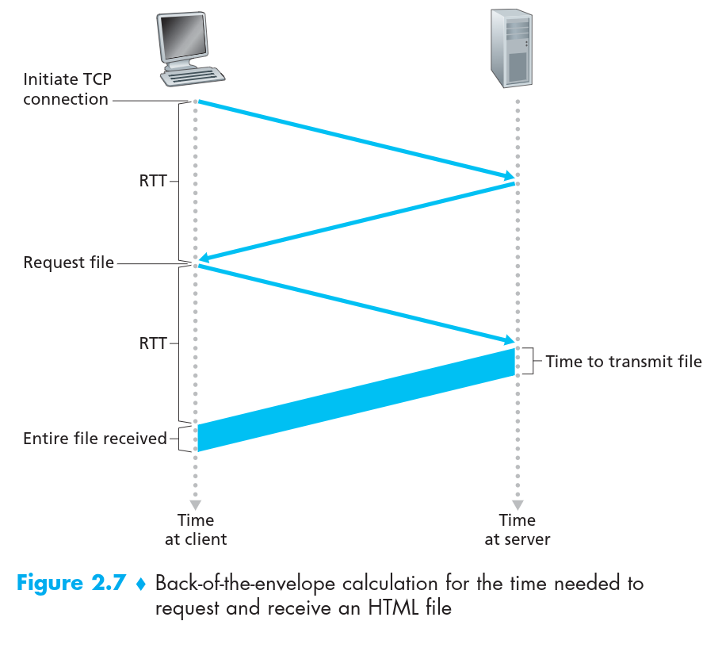
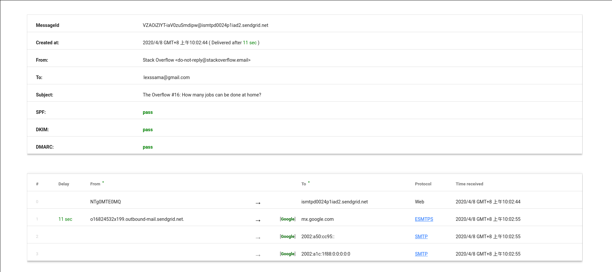

下面提到的的文档都收藏在 https://github.com/LEXSSAMA/Valuable-document-collention-during-learning-process中
课本是：computer network a top-down approach
1.列出5个(非专有)的互联网应用，并说明他们使用的应用层协议
查过一些资料，好像有一个技术叫做Deep packet inspection (DPI)可以查到软件使用的协议，github上也有一个开源软件nDPI，还有一个软件叫做wireshark,但是因为有点复杂，我现在暂且不深入研究，下面答案都来着互联网
- 1 . Chrome (谷歌浏览器貌似不是开源的．．．,不管了用的最多,下面答案来自stackoverflow)
in term of what protocol you can use in the chrome browser bar you can use: HTTP,HTTPS,FILE and FTP.SSH is not implemented by chrome,but rather it implements SSL, it also does nit implement SMTP,but rather when you visiting a website(via HTTP or hopefully HTTPS).That website is not at all connecting to an SMTP server to display you you emails, but is merely serving up web pages and conneting to API’s to display/edit/compose your email (by then which the email client’s backend is connected to their SMTP server).
Also chrome does implement FTP,like you can visit an IP address that has FTP enable such as : ftp://123.34.45.890 and you can use the directory listings as a webpage. An example of this would the CentOS mirrors here.on the right column they have FTP sites. You can access the FIP director via web browser that supports FTP or you can fire up a terminal and do ftp ftp://ftp.is.co.za/mirror/centos/. - 2 . 网易云音乐
在应用层使用的是HTTP协议 - 3 . 微信
微信是应用层是使用HTTP协议（来源是: 利用Wireshark软件对微信协议的分析——QPIC） - 4 . 大部分软件都需要使用DNS协议,例如上面文章有提到微信就需要使用DNS来进行域名解析
- 5 . QQ
应用层使用的是QICQ协议
2.网络体系结构和应用程序的体系结构有什么不同?
- 应用程序体系结构（application architecture）
- 客户－服务器体系结构（client-servers architecture）
答： - P2P（peer to peer）
- 混合体系结构 (hybind architecture)
- 网络体系结构(network architecture)
- 应用层(application layer)
- 传输层(transport layer)
- 网络层(network layer)
- 链路层(link layer)
- 物理层(physical layer)
所以有什么不同呢？
| Network architecture | Application architecture |
|---|---|
| Network architecture refers to the organization of the communication process into layers. | Application architecture, on the other hand, is designed by an application developer and dictates the broad structure of the application. |
| How any network of any local area or wide area is built is called the Network Architecture. | How any application is built is called the application architecture |
| Example - The five-layer Internet architecture, Servers. | Example - Client-server or P2P. |
(来源是：What is the difference between network architecture and application architecture?)
我感觉这个比较没有意义啊，要比较也是P2P和client-servers architecture之间有什么不同吧．．
3. 在两个进程的通信会话中哪个进程是客户端，那个进程是服务端
答：In the context of communication session between a pair of process,the process that initiates the communication session is labeled as client and the process that wait to be contacted is labeled as server.(来自课本)
4.对于P2P的协议你是否同意在通信会话时没有客户端－服务端的概念，请说明理由
答：不同意，P2P协议也存在客户端－服务端的概念，但是与client-servers架构稍有不同的是，P2P中的peer即当客户端也当服务端，当peer接受数据的时候为客户端，上传数据的时候就是服务端，上传下载也可以同时进行,此时peer即是客户端，也是服务端.
5.一个运行在源主机的进程如何识别确认运行的目标主机和运行在目标主机上的进程
答：通过目标主机的IP地址可以确认目标主机，通过目标主机程序占用的套接字端口号可以确认目标主机程序
6.假如你想做一个交易(do a transation)从远端的客户端到服务端，要求尽可能的快，你会选择用TCP还是UDP,说明理由
答：我会选择UDP,因为UDP只需要一次RTT（round-trip-time），而TCP至少两次RTT,所以用UDP更快
- TCP:

7.课本2.4提及到的应用程序都是no data loss and timing(没有数据丢失，以及不规定时间的)能不能构想一个应用程序要求没有数据丢失并且对时间有很高的敏感性
答：网络游戏．
8.列出传输层协议能提供的４类服务，对于每项服务指出是由TCP还是UDP(或者两者都可以)提供
答：We have organized transfer protocol services along four dismensions : reliable date transfer,throughput,timing,security(来自课本)
- reliable data transfer : TCP do,UDP not.
- throughput: TCP have congestion-control mechanism,UDP not.
- timing :Neither TCP nor UDP.
- security: Neither TCP nor UDP.
9.TCP可以增强为SSL(Secure Socket Layer)去提供进程之间的安全服务，例如加密，SSL的操作是在传输层还是在应用层，如果软件开发者想要将TCP增强为SSL，他应该怎么做．
答：We emphasize that SSL is not a third internet transport protocol, on the same level as TCP and UDP but instead is an enhancement of TCP, with the emhancement being implemented in the application layer,In particular, if an application wants to use the services of SSL, it needs to include SSL code(exiting highly optimized libraries and classes) in both the client and server side of the application. SSL has its own socket API that is similar to the trandition of TCP socket API, When an application uses SSL, the sending process passes cleartext data to the SSL socket; SSL in the sending host then encrypts the data and passes the encrypted data to the TCP socket; The encrypted data travels over the internet to the TCP socket in the receiving process. The receiving socket passes the encrypted data to SSL,which decrypts the data. Finally.SSL passes the cleartext data through its SSL socket to receiving process.(来自课本)
10. 什么是握手协议？
答:握手协议就是两端在首次建立TCP链接时互相发送的三次消息,如第六题的图．
11.为什么HTTP,FTP,SMTP,POP3,都是基于TCP,而不是UDP
答：因为上面这些协议都需要得到的数据都是按照顺序，TCP可以提供这个功能而UDP不行
12.想象电子商务网站想要保持每一个用户的购买记录，描述用用cookie怎么做到
答：当你首次访问网站时，网站会给你创建一个独一无二的ID(cookie码),这个码会存放在你的浏览器中，也会存放在网站的后台数据库中，网站会把你选择的商品存入你cookie码的相应存储中，当你下次访问相同网站的时候，你发出的请求会夹带相应的cookie码，这时网站数据库就能匹配到你，从而展现你的购买记录．
13.描述Web缓存怎么降低接收请求对象的延迟，Web缓存是能降低所以请求对象的延迟还是仅仅降低部分请求对象的延迟，为什么？
答：Web缓存是在大学，企业，ISP 之类的在局域网中建立一个基础设施，用来存储最近局域网内用户访问过的网站，当在短时间内，用户再次访问该网站，Web缓存就可以在直接返回数据给用户，而不用请求网站的服务器，从而降低延迟,Web缓存是可以降低所有请求对象的延迟的，因为有缓存的存在，降低了局域网向外部互联网的请求流量，所以降低了所有请求对象的延迟．
14. Telnet一个Web服务器然后发生一些请求指令标题行要包括If-modified-since:去让强制服务器响应304 Not Modifiedstatus code.消息
答：下面是google的答案，但是我对www.baidu.com照做得到的200,没办法得到304，所以…
“telnet” command:
It is a command used in windows (also in linux) to connect to the web server.
The server responds to the HTTP GET requests.
It reply to the client with the requested information.
Command to open the connection with web server:
telnet <domain name of web server> <port number>
example: telnet www.sr2jr.com 23
After establishing the connection with the web server
it is possible to request a specified page from the web server.
Command to request the page web server:
GET <page name> HTTP/1.0
If the page is available then the server sends the page details.
It include the “If-modified-since” message with the 304 Not Modified
status code in the response.
15.为什么说FTP发送带外控制信息.
答：因为FTP（文件传输协议）会建立两个TCP连接（端口为20,21），一个是用来传输文件数据(20)，一个是用来传输控制信息(21)，因为FTP协议传输控制信息是用额外的一个连接传送，而不是文件传输的连接所以叫做带外(out-of-band)
16.假设Alice用基于Web的e-mail的站帐户例如（Hotmail 和 gmail)发送文件给Bob.Bob访问其邮箱服务器用POP3协议，描述消息是怎么从Alice发送到Bob这边，明确的表示出发送途中使用的应用层协议．
graph LR
id1(Alice)==HTTP==>id2(Web e-mail server)
==SMTP==>id3(Bob's mail server)==POP3==>id4(Bob)
17.打印出你最近收到的邮件的标题(header of e-mail),一共有多少行，分析每一行的的作用.
答：
- Message header:

分析：Messageld,Created at,From,To,Subject字段就不说了．
SPF: sender policy framework (发送方策略架构)是一直email的认证协议，主要用来检测伪造的email地址．
DKIM: Domain Key Identify Mail(域密钥识别邮件),允许接受者通过数字签名去检查是否发件人的域名是否真正发生和认证过该邮件．
DMARC: Domain Message Authentication,Reporting and Comformance,是一种email的认证协议，用来保护邮件域名所有者的邮件域名免受未授权使用．
18.从用户的角度，阐述一下POP3的download-and-delete-mode和download-and-keep-mode的不同之处.
答:不同之处就在于download-and-delete-mode下载完了就删除，当换一个设备(终端)再次访问的时候，就无法看到删除的消息了，这样消息的移动性就很差．
而download-and-keep-mode下载然后保留，当换一个设备再次登录邮箱服务器下载时，还可以看到，消息的移动性很好.
19.是否可能组织的Web server 和mail server有相同的主机别名,如果可能，mail server的RR类型是什么？
答:可以做到，mail server的类型是MX(Mail Exchange Record).
20.是否可能根据邮件的头部信息地址(例如什么.edu)中确定信息发送的IP地址．对Gmail做同样的操作．
答：You should be able to see the sender’s IP address for a user with an .edu email address. But you will not be able to see the sender’s IP address if the user uses a gmail account．
21.在BitTorrent中假设Alicer在30秒中始终提供块给Bob,Bob是否有必要在这30秒内同样给Alice提供块呢?请说明理由
答:没有必要，因为在BitTorrent中，没30秒选出一个而外的peer给其发送块是为了帮助新进入的peer以后可以有块去交易，当然如果Alice是Bob的top four neighboring 的话Bob也会给Alice发送块．
22.思考一下，如果一个新进入的peer Alice，没有任何块，所以她不能成为邻居peer的Top four neighboring peer，也没有块可以上传，所以他是怎么样得到她的首块的呢?
答:这道题其实21题时已经回答了，在BitTorrent中其他有块的peer每30秒就会选出一个幸运peer(optimistically unchocked)然后给其发送块，所以Alice有可能被选中然后就可以得到第一个块
23.什么是覆盖网络(overlay network),它是否包括路由，它的网络边缘是什么.
答:覆盖网络就是在P2P文件分享中两个peer的一种逻辑链接，即不是真实的在物理上的连接，它不包括路由，网络的边缘就每个peer.
24.描述一下every peer keep tracks all peer 的DHT结构的优缺点，和circular DHT (no shortcut)的优点和缺点．
答:
- Every peer keep tracks all peer 这种结构的优点就是你可以马上就知道你需要的东西的位置，但是缺点就是当peer量巨大的时候，每个peer都存储其他peer的踪迹实在是太耗存储资源了，而且很难维护．
- circular DHT(no shortcut)的优点就是它只需要记住两个peer就可以了，缺点就是peer数量N巨大的时候，peer的询问请求的平均时间是N/2.
25.列出至少4个不同的适合使用p2p架构的应用程序.
答:文件分发，即时信息，视频流，分布式计算
26.在章节2.7的描述中UDP服务器仅仅需要一个套接字，而TCP服务器需要两个套接字，为什么，如果TCP服务器支持n个用户同时连接，每个用户来自不同的客户端主机，TCP服务器需要的多少个套接字.
答:在TCP服务器一端有一个wecoming socket,用来进行握手协议的,握手协议结束后TCP会新开一个端口叫做connecting socket进行数据的传输,所以TCP服务器支持n个客户端同时连接就会有n+1个socket,而UDP没有wecoming socket仅仅需要一个套接字．
27.在章节2.7中的客户－服务端应用程序中，TCP连接为什么服务端一定要在客户端之前先启动，而UDP相反，必须服务端先在客户端之前启动．
答:因为TCP在传输数据之前必须进行三次握手，而UDP可以直接传输数据
计算机网络 Computer Network A Top-Down Approach Computer Network A Top-Down Approach
本博客所有文章除特别声明外，均采用 CC BY-SA 3.0协议 。转载请注明出处！